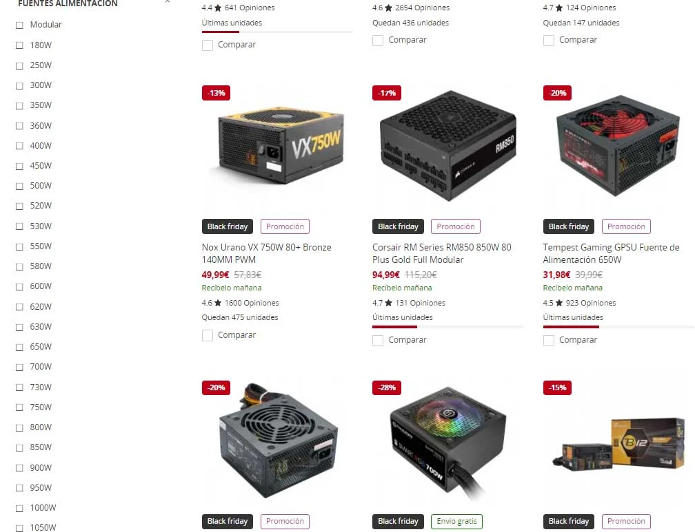

Fuente de Alimentacion?
Que es?
La fuente de alimentación, abreviada como PSU y conocida también como fuente de poder, es imprescindible para el funcionamiento de un PC. Esto es debido a que es la encargada de convertir la corriente alterna (AC) en corriente continua (DC), la forma de energía que los ordenadores necesitan para funcionar, es una pieza crucial que no puede faltar.
Como funciona
Las fuentes de alimentación utilizan tecnología de conmutación para poder convertir la corriente alterna (AC) en continua (DC). Para ello, emplea voltajes que pueden ser de 3,3, 5 o 12 voltios. Hoy en día, más del 90% de la carga de los ordenadores se sitúa en los 12 V.
La corriente alterna suministrada por la fuente de alimentación es fácil de filtrar y rectificar, lo que reduce el ruido y las variaciones de tensión.
Las cuatro fases de conversion
TRANSFORMACIÓN
El transformador bobina posibilita que se reduzca la tensión de entrada a la fuente, generando una salida de 5 a 12 voltios.
RECTIFICACIÓN
El puente rectificador es el encargado de que el voltaje no baje de 0 voltios, en otras palabras, que se produzcan oscilaciones que puedan perjudicar gravemente el ordenador.
FILTRADO
La señal se aplana al máximo, gracias a uno o dos condensadores, que retienen la corriente y la dejan pasar lentamente.
ESTABILIZACIÓN
Cuando ya la señal es continua y casi del todo plana, lo único que resta por hacer es estabilizar.
Tipos de fuentes de poder
Según su forma
ATX. La mayoría de fuentes vienen con este formato, sus medidas son 150 mm de ancho y 86 mm de altura, además de que ofrecen más potencia que los demás formatos de fuentes. Hay una diferencia en cuanto a su profundidad
SFX(Small Form Factor). Ideado para cajas con factor de forma Mini-ITX, tienen unas dimensiones de 125 mm de ancho y 63.5 mm de altura, siendo su diámetro de 100 mm. Cuenta con límites físicos obvios, por lo que cuesta ver potencias altas (más de 500 W) y las capacidades de refrigeración son más limitadas.
TFX. Parecidas a unas cajas de zapatos, vienen a ser una fuente de alimentación de tamaño alargado estando su ventilador dispuesto en un extremo de la fuente, y no en medio de la misma. Sus medidas son de 85 mm de ancho, 65 mm de altura y 175 mm de profundidad. Eso sí, su potencia es la menor de todas.
Según su refrigeración
Activa. Vienen a ser las opciones más comunes, equipando un ventilador para expulsar el calor generado por los componentes de la fuente de alimentación. Algunas fuentes más refinadas vienen con modos semi-pasivos con los que podemos disfrutar de 0 dB, es decir, pleno silencio, siempre que el PC tenga poca carga.
Pasiva. Su refrigeración es mediante la convección, no equipando ningún ventilador y siendo muy silenciosas. Solo recomendamos su compra a aquellos que sepan refrigerar óptimamente su PC porque el calor del interior de la caja se disparará cuando exijamos el máximo rendimiento a nuestro equipo.
Según su potencia
La potencia de las fuentes de alimentación tiene un rango de vatios muy amplio, partiendo desde los 180 W y yendo hasta los 2.000 W. La mayoría de las personas optan entre una fuente de 450 W y 850 W debido a que no disfrutaremos nunca del 100% de toda su potencia, sino que para ello hay que tener en cuenta la eficiencia energética.
Según su Certificación
80 Plus
se trata de una certificación que nos asegura un 80% de eficiencia al 100% de carga. Cogiendo como ejemplo una fuente de 500 W, estaremos gastando 100 W más, por lo que gastaremos 600 W al 100% de carga (que es complicado que se dé dicha situación).
80 Plus bronze
Las fuentes 80 Plus Bronze serían uno de los puntos de partida porque ya se introducen mejoras de eficiencia cuando tengamos la fuente trabajando a 50%; eso sí, al 100%, la eficiencia es del 82%: solo un 2% más.
80 Plus silver
En 80 Plus Silver vemos mejoras en 20% de carga, 50% de carga y 100% de carga, aunque lo más interesante es el 50% de carga. La mayoría del tiempo tendremos el PC entre 20 y 50 por cien de carga, por lo que dichos valores son más interesantes que el 100%. Esto es porque el 100% solo lo necesitaremos si hacemos overclock o exprimimos muchísimo el PC.
80 Plus gold
80 Plus Gold es una de las certificaciones más buscadas por los gamers porque ofrece una eficiencia energética muy interesante, siendo de esta manera:
20% (87%): 565 W.
50% (90%): 550 W.
100% (87%): 565 W.
80 Plus platinum
Podríamos decir que entre los distintos tipos de fuente de alimentación, aquellas que llevan una certificación 80 Plus Platinum son consideradas de gama alta. Se recomiendan para muchos vatios por su gran eficiencia energética, la cual se resume en:
20% (90%): 550 W.
50% (92%): 540 W.
100% (89%): 555 W.
80 Plus titanium
Terminamos con 80 Plus Titanium: es la máxima certificación que encontramos, la cual introduce un valor de eficiencia al 10% de carga en la fuente, siendo muy interesante al 50% de carga. Terminando con el ejemplo de 500 W, los consumos se nos quedarían de la siguiente manera:
10% (90%): 550 W.
20% (92%): 540 W.
50% (94%): 530 W.
100% (90%): 550 W.